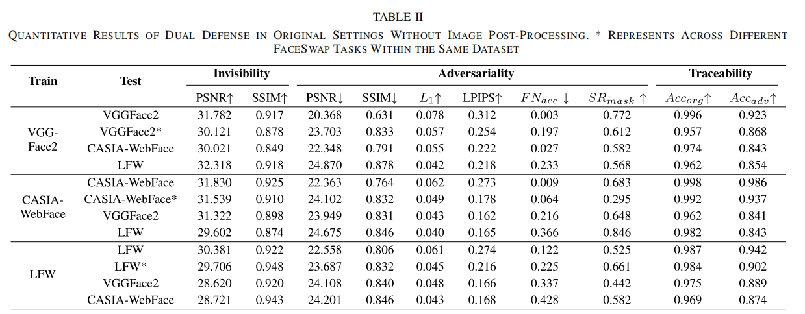
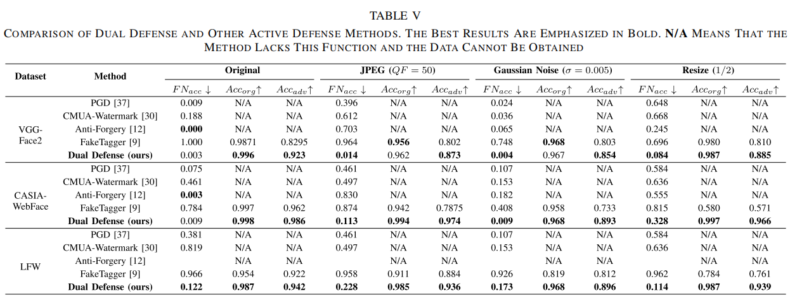
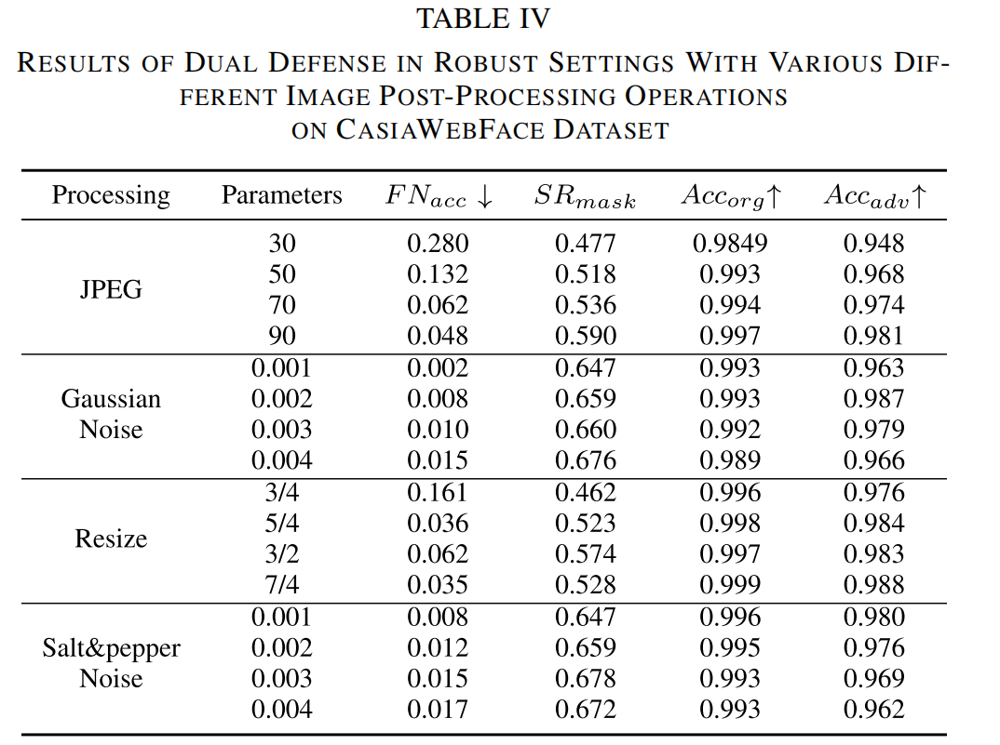

Dual_Defense
Dual Defense: Adversarial, Traceable, and Invisible Robust Watermarking Against Face Swapping
摘要
深度人脸交换技术的恶意应用构成了虚假信息传播和身份欺诈等安全威胁。一些研究提出了利用鲁棒水印方法来跟踪人脸图像的版权，促进伪造后的身份归属。然而，这些方法并不能从根本上防止或消除换脸的不利影响。为了解决这个问题，我们提出了双重防御，这是一种基于鲁棒对抗性水印的创新框架。它通过一次嵌入鲁棒对抗性水印，同时跟踪图像版权并破坏人脸交换模型。
具体而言，我们提出了一种原域特征冒充攻击（OFEA, Original-domain Feature Emulation Attack）方法，该方法通过专门设计的原始域对抗性损失，使可跟踪水印更具攻击性。此外，我们将小波域图像结构信息补偿损失与通道注意力机制相结合，以联合平衡水印的不可见性、对抗性和可追溯性。此外，我们设计了一种更全面、更合理的评估方法来全面评估对抗性攻击对人脸交换模型的有效性。大量实验表明，双重防御表现出非凡的跨任务通用性和数据集泛化能力。它在原始和稳健的环境中都保持了令人印象深刻的对抗性和可追溯性，超过了目前仅拥有其中一种功能的伪造防御方法。
图1。深度伪造主动防御场景的说明。基于水印的(a)主动防御。能够追踪伪造图像的来源，但不能防止伪造，并消除其在来源上的不利影响。基于对抗性例子的(b)积极防御。它可以破坏伪造文件的生成，但不支持可追溯性，在攻击失败时不提供可追溯性基础。(c)，我们的双重防御，主动防御。在跟踪面部图像版权的同时，它可以在确保水印完整性的同时破坏FaceSwap模型。此外，它还提供了在攻击失败时的辅助可跟踪性。
引言
我们的贡献可以总结为：
我们提出了一种新型的可追溯性对抗性水印网络，这是第一种结合了对抗性和可追溯性的针对人脸交换模型的双效应主动防御方法。它具有优异的鲁棒性、跨任务通用性和数据集泛化能力。
我们创新性地提出了OFEA方法，通过将可追溯的水印嵌入到载体的鲁棒对抗性特征中，使其具有对抗性。同时，我们通过结合一个专门设计的小波域结构信息补偿损失来解决水印多目标学习中的优化冲突。
我们专门设计了一种更合理、更全面的评估方法来充分评估对脸交换的逆性。结合传统的评估指标，我们已经证明了双重防御在三个大数据集上的源跟踪和对抗性攻击中的双重有效性。
网络
Dual Defense整体算法流程如图所示：
图3。双重防御的整个管道。双防御系统通过端到端训练来优化水印模型。该过程首先将目标图像$ X_t \(和用户定义的水印\) W_{ID} $输入到编码器中，以生成水印图像。随后，水印图像进行FaceSwap进行原始域特征冒充攻击（OFEA），计算原始域对抗损失。受干扰的图像和水印图像都通过水印解码器进行解码器优化。
。
实验
定量结果
本文首先在CASIA-WebFace、VGGFace2和LFW三个大型人脸数据集上，从不可见性、对抗性以及可溯源性三个方面的多个指标全面评估Dual Defense的性能。实验表明Dual Defense在保证不可见性的同时实现了出色的对抗性以及水印恢复精度。此外，通过跨图像身份及跨数据集测试表明，Dual Defense具有显著的身份通用性和数据集泛化性
Dual Defense在原始设置下的定量结果。

此外，本文与典型的基于对抗攻击的和基于深度水印的深度伪造主动防御方法分别在原始场景和各种不同的鲁棒场景下进行了对比。实验表明，Dual Defense在对抗性及可溯源性方面都几乎保持最优的性能。尤其在对图像进行后处理后，对抗攻击方法的对抗性显著降低，而Dual Defense依旧保持显著的对抗性能。
Dual Defense与其他主动防御方法的比较。N/A
表示该方法无对应性能。

在真实社交网络传输信道中，图像通常经历各种后处理操作。因此，本文评估了Dual Defense在四种常见图像后处理操作下对 FaceSwap 的对抗性和可溯源性，实验表明当水印图像经过各种处理操作时，Dual Defense始终保持出色的性能，从而验证了本文方法在实际场景中的可行性。
